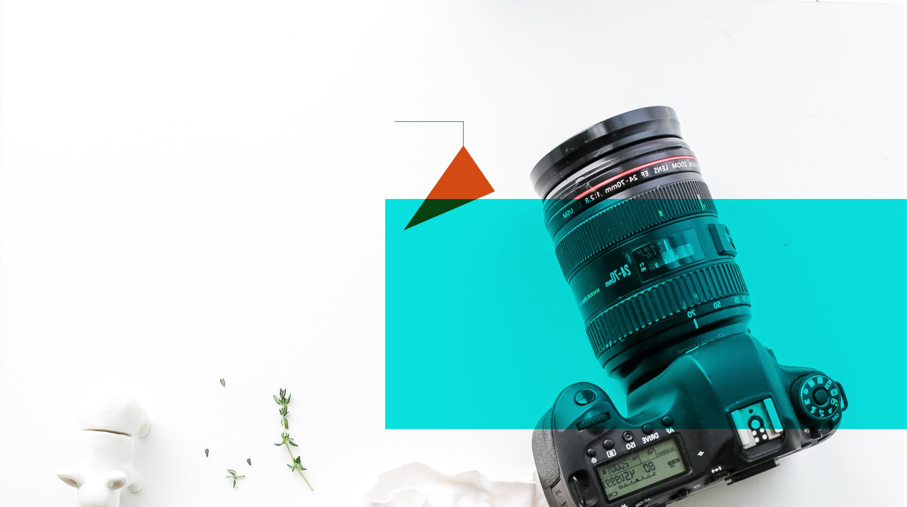

Learn all about the camera and digital photography with this crash course.

There are three main types of cameras:
These are the simplest to use (as the name implies) and offer the
least amount of options when it comes to settings and manual control.
A point-and-shoot camera also comes with a lense built into it. This
lense can not be replaced.
DSLRs are cameras in which the light moves through the lens and hits a
mirror, that will redirect it to the viewfinder. This lets the
photographer see exactly what the digital sensor will see, thus making
it easier to frame the picture correctly.
These are the newest type and have quickly become very popular. As
there is no mirror in the camera, the viewfinder and the camera
monitor are entirely electronic. As a result of this the cameras are
typically smaller and lighter than the DSLRs.
Point-and-shoot
DSLR
Mirrorless
A camera will typically have five different modes of operation:
automatic, program, aperture priority, shutter priority and manual.
Automatic
Aperture or shutter priority
Manual mode
The automatic mode is the simplest mode to use. All you have to do is
click the trigger. The camera software will be in charge of all the
settings for the image. This includes the shutter speed, the aperture,
the ISO setting and the white balance. This is not just a great way to
get started with taking photos, it is also a very useful setting, if
your purpose is that of documenting where there is not a lot of time
to mess with getting the settings right. The disadvantage is that you
lose control the camera priorities
In the two priority modes you gain control over either the aperture or
the shutter speed and the camera will automatically choose the other.
This means that in one mode you can decide the shutter speed to fit if
your motive is still or fast moving or perhaps if you wish to add
motion blur to your image while in the other mode you can adjust the
aperture thus controlling the depth of field (bokeh) and let the
camera decide on the shutter speed. These modes are great for fast
photography, where you still want to retain control over one essential
setting